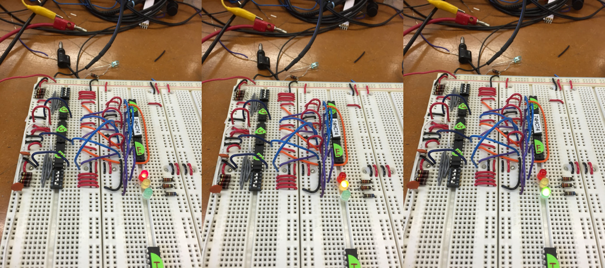

Discrete FSM Stoplight (without Microcontroller)
Only Uses Discrete DIP Electronic Components
Completed as part of Physics 123 at Harvard, Spring 2015

As a final project for the class Physics 123 at Harvard College, I designed and built the control logic for a circuit that would control a stoplight. The timing for the "green" and "red" sequences of the stoplight was programmable through two DIP-switches and the "yellow" sequence was hard-wired. Three 74HC74 dual D flip-flops are used to control the state from between red, yellow, green. Though each 74HC74 contained two flip-flops, only one was used on each chip to keep the wires on one side of the board.
Three separate 74HC164 counters determine the length of time that each light is on. DIP switches control the value loaded into each counter. By adjusting the load value, the time each light is on can be changed. The Cout of each counter triggers the enable on the following light advancing the FSM